전기기능사 (2014-10-11 기출문제)
1과목: 전기 이론
1. △결선에서 선전류가 10√3이면 상전류는?
- 5 A
- 10 A
- 10√3 A
- 30 A
(정답률: 68%)

2. 인덕턴스 0.5H에 주파수가 60 Hz이고 전압이 220V인 교류 전압이 가해질 때 흐르는 전류는 약 몇 A 인가?
- 0.59
- 0.87
- 0.97
- 1.17
(정답률: 54%)
3. 교류 전력에서 일반적으로 전기기기의 용량을 표시하는데 쓰이는 전력은?
- 피상전력
- 유효전력
- 무효전력
- 기전력
(정답률: 62%)
4. 전류에 의한 자기장의 세기를 구하는 비오-사바르의 법칙을 옳게 나타낸 것은?
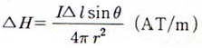
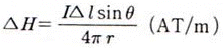
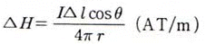
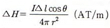
(정답률: 68%)
5. 일반적으로 온도가 높아지게 되면 전도율이 커져서 온도 계수가 부(-)의 값을 가지는 것이 아닌 것은?
- 구리
- 반도체
- 탄소
- 전해액
(정답률: 58%)
6. 평행한 두 도선의 간의 전자력은?
- 거리 r 에 비례한다.
- 거리 r 에 반비례한다.
- 거리 r2 에 비례한다.
- 거리 r2 에 반비례한다.
(정답률: 18%)
7. 권선수 100회 감은 코일에 2 A의 전류가 흘렀을때 50×10-3Wb 자속이 코일에 쇄교 되었다면 자기 인덕턴스는 몇 H 인가?
- 1.0
- 1.5
- 2.0
- 2.5
(정답률: 53%)
8. 코일의 성질에 대한 설명으로 틀린 것은?
- 공진하는 성질이 있다.
- 상호유도작용이 있다.
- 전원 노이즈 차단기능이 있다.
- 전류의 변화를 확대시키려는 성질이 있다.
(정답률: 54%)
9. 200 V의 교류전원에 선풍기를 접속하고 전력과 전류를 측정하였더니 600 W, 5 A 이였다. 이 선풍기의 역률은?
- 0.5
- 0.6
- 0.7
- 0.8
(정답률: 66%)
10. 임의의 폐회로에서 키르히호프의 제2법칙을 가장 잘 나타낸 것은?
- 기전력의 합 = 합성 저항의 합
- 기전력의 합 = 전압 강하의 합
- 전압 강하의 합 = 합성 저항의 합
- 합성 저항의 합 = 회로 전류의 합
(정답률: 72%)
11. 5 Wh는 몇 J 인가?
- 720
- 1800
- 7200
- 18000
(정답률: 79%)
12. 자속밀도 0.5Wb/m2의 자장 안에 자장과 직각으로 20 cm의 도체를 놓고 이것에 10 A의 전류를 흘릴 때 도체가 50 cm 운동한 경우의 한 일은 몇 J 인가?
- 0.5
- 1
- 1.5
- 5
(정답률: 41%)
13. 일반적으로 절연체를 서로 마찰시키면 이들 물체는 전기를 띠게 된다. 이와 같은 현상은?
- 분극
- 정전
- 대전
- 코로나
(정답률: 84%)
14. 공기 중에서 m(Wb)의 자극으로부터 나오는 자력선의 총수는 얼마인가?(단, μ는 물체의 투자율이다.)
- m
- μm
- m/μ
- μ/m
(정답률: 63%)
15. 그림에서 단자 A-B 사이의 전압은 몇 V 인가?
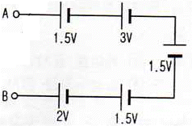
- 1.5
- 2.5
- 6.5
- 9.5
(정답률: 66%)
16. 전구를 점등하기 전의 저항과 점등한 후의 저항을 비교하면 어떻게 되는가?
- 점등 후의 저항이 크다.
- 점등 전의 저항이 크다.
- 변동 없다.
- 경우에 따라 다르다.
(정답률: 66%)
17. 진공 중에서 같은 크기의 두 자극을 1m 거리에 놓았을 때 작용하는 힘이 6.33×104N이 되는 자극의 단위는?
- 1 N
- 1 J
- 1 Wb
- 1 C
(정답률: 66%)
18. 2개의 저항 R1, R2를 병렬 접속하면 합성 저항은?
- 1/(R1+ R2)
- R1/(R1+ R2)
- (R1× R2)/(R1+ R2)
- R2/(R1+ R2)
(정답률: 83%)
19. 다음 전압 파형의 주파수는 약 몇 Hz인가?
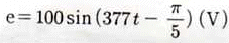
- 50
- 60
- 80
- 100
(정답률: 67%)
20. 납축전지가 완전히 방전되면 음극과 양극은 무엇으로 변하는가?
- PbSo4
- PbSo2
- H2So4
- Pb
(정답률: 61%)
2과목: 전기 기기
21. 동기기의 전기자 권선법이 아닌 것은?
- 전절권
- 분포권
- 2층권
- 중권
(정답률: 55%)
22. 변압기의 정격출력으로 맞는 것은?
- 정격 1차 전압 × 정격 1차 전류
- 정격 1차 전압 × 정격 2차 전류
- 정격 2차 전압 × 정격 1차 전류
- 정격 2차 전압 × 정격 2차 전류
(정답률: 54%)
23. 직류기에서 정류를 좋게 하는 방법 중 전압정류의 역할은?
- 보극
- 탄소
- 보상권선
- 리액턴스 전압
(정답률: 56%)
24. 역률이 좋아 가정용 선풍기, 세탁기, 냉장고 등에 주로 사용되는 것은?
- 분상 기동형
- 콘덴서 기동형
- 반발 기동형
- 셰이딩 코일형
(정답률: 76%)
25. 기중기, 전기 자동차, 전기 철도와 같은 곳에 가장 많이 사용되는 전동기는?
- 가동 복권 전동기
- 차동 복권 전동기
- 분권 전동기
- 직권 전동기
(정답률: 83%)
26. 동기전동기의 공급전압이 앞선 전류는 어떤 작용을 하는가?(오류 신고가 접수된 문제입니다. 반드시 정답과 해설을 확인하시기 바랍니다.)
- 역률작용
- 교차자화작용
- 증자작용
- 감자작용
(정답률: 46%)
27. 농형 유도전동기의 기동법이 아닌것은?
- 전전압 기동
- △-△ 기동
- 기동보상기에 의한 기동
- 리액터 기동
(정답률: 58%)
28. 동기조상기를 과여자로 사용하려면?
- 리액터로 작용
- 저항손의 보상
- 일반부하의 뒤진 전류 보상
- 콘덴서로 작용
(정답률: 54%)
29. 직류를 교류로 변환하는 기기는?
- 변류기
- 정류기
- 초퍼
- 인버터
(정답률: 76%)
30. 그림의 정류회로에서 다이오드의 전압강하를 무시할 때 콘덴서 양단의 최대 전압은 약 몇 V 까지 충전 되는가?
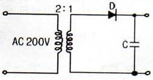
- 70
- 141
- 280
- 352
(정답률: 61%)
31. 회전수 540 rpm, 12극, 3상 유도전동기의 슬립(%)은?(단, 주파수는 60 Hz 이다.)
- 1
- 4
- 6
- 10
(정답률: 45%)
32. 직류 분권전동기의 회전방향을 바꾸기 위해 일반적으로 무엇의 방향을 바꾸어야 하는가?
- 전원
- 주파수
- 계자저항
- 전기자전류
(정답률: 53%)
33. 다음 중 변압기의 원리와 관계있는 것은?
- 전기자 반작용
- 전자 유도 작용
- 플레밍의 오른손 법칙
- 플레밍의 왼손 법칙
(정답률: 56%)
34. 동기기 운전시 안정도 증진법이 아닌 것은?
- 단락비를 크게 한다.
- 회전부의 관성을 크게 한다.
- 속응여자방식을 채용한다.
- 역상 및 영상임피던스를 작게 한다.
(정답률: 43%)
35. 다음 중 변압기의 1차측이란?
- 고압측
- 저압측
- 전원측
- 부하측
(정답률: 74%)
36. 3상 유도전동기의 토크는?
- 2차 유도기전력의 2승에 비례한다.
- 2차 유도기전력에 비례한다.
- 2차 유도기전력과 무관하다.
- 2차 유도기전력의 0.5승에 비례한다.
(정답률: 52%)
37. 50 kW의 농형 유도전동기를 기동하려고 할 때, 다음 중 가장 적당한 기동 방법은?
- 분상기동법
- 기동보상기법
- 권선형기동법
- 2차저항기동법
(정답률: 44%)
38. 보극이 없는 직류가 운전 중 중성점의 위치가 변하지 않는 경우는?
- 과부하
- 전부하
- 중부하
- 무부하
(정답률: 76%)
39. 1차 전압 13200 V, 2차 전압 220 V 인 단상 변압기의 1차에 6000 V의 전압을 가하면 2차 전압은 몇 V 인가?
- 100
- 200
- 50
- 250
(정답률: 68%)
40. 자속밀도 0.8Wb/m2인 자계에서 길이 50 cm인 도체가 30 m/s로 회전할 때 유기되는 기전력(V)은?
- 8
- 12
- 15
- 24
(정답률: 56%)
3과목: 전기 설비
41. 수ㆍ변전 설비의 고압회로에 걸리는 전압을 표시하기 위해 전압계를 시설할 때 고압회로와 전압계 사이에 시설 하는 것은?
- 수전용 변압기
- 계기용 변류기
- 계기용 변압기
- 권선형 변류기
(정답률: 64%)
42. 가연성 분진에 전기설비가 발화원이 되어 폭발의 우려가 있는 곳에 시설하는 저압 옥내배선 공사방법이 아닌 것은?
- 금속관 공사
- 케이블 공사
- 애자사용 공사
- 합성수지관 공사
(정답률: 75%)
43. 전선의 접속이 불완전하여 발생할 수 있는 사고로 볼 수 없는 것은?
- 감전
- 누전
- 화재
- 절전
(정답률: 72%)
44. 저압 구내 가공인입선으로 DV전선 사용 시 전선의 길이가 15m 이하인 경우 사용할 수 있는 최소 굵기는 몇 mm 이상인가?
- 1.5
- 2.0
- 2.6
- 4.0
(정답률: 45%)
45. 나전선 등의 금속선에 속하지 않는 것은?
- 경동선(지름 12mm 이하의 것)
- 연동선
- 동합금선(단면적 35mm2 이하의 것)
- 경알루미늄선(단면적 35mm2 이하의 것)
(정답률: 44%)
46. 배선용 차단기의 심벌은?
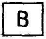
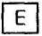
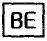
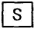
(정답률: 66%)
47. 아래의 그림기호가 나타내는 것은?
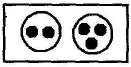
- 비상 콘센트
- 형광등
- 점멸기
- 접지저항 측정용 단자
(정답률: 80%)
48. 무대ㆍ오케스트라 박스ㆍ영사실 기타 사람이나 무대 도구가 접촉 될 우려가 있는 장소에 시설하는 저압 옥내배선의 사용전압은?
- 400 V 미만
- 500 V 미만
- 600 V 미만
- 700 V 미만
(정답률: 80%)
49. 금속관 공사에 의한 저압 옥내배선에서 잘못된 것은?
- 전선은 절연 전선일 것
- 금속관 안에서는 전선의 접속점이 없도록 할 것
- 알루미늄 전선은 단면적 16mm2 초과 시 연선을 사용 할것
- 옥외용 비닐절연전선을 사용할 것
(정답률: 59%)
50. 옥내의 건조하고 전개된 장소에서 사용전압이 400 V 이상인 경우에는 사용할 수 없는 배선공사는?
- 애자사용공사
- 금속덕트공사
- 버스덕트공사
- 금속몰드공사
(정답률: 43%)
51. 조명기구를 반간접 조명방식으로 설치하였을 때 위(상방향)로 향하는 광속의 양(%)은?
- 0 ~ 10
- 10 ~ 40
- 40 ~ 60
- 60 ~ 90
(정답률: 38%)
52. 하나의 콘센트에 두개 이상의 플러그를 꽂아 사용할 수 있는 기구는?
- 코드 접속기
- 멀티 탭
- 테이블 탭
- 아이언 플러그
(정답률: 82%)
53. 접지공사의 종류가 아닌 것은?(오류 신고가 접수된 문제입니다. 반드시 정답과 해설을 확인하시기 바랍니다.)
- 제1종 접지공사
- 제2종 접지공사
- 특별 제2종 접지공사
- 제3종 접지공사
(정답률: 66%)
54. 다음 ( ) 안에 알맞은 내용은?
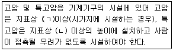
- ㄱ : 3.5m, ㄴ : 4m
- ㄱ : 4.5m, ㄴ : 5m
- ㄱ : 5.5m, ㄴ : 6m
- ㄱ : 5.5m, ㄴ : 7m
(정답률: 47%)
55. 전주의 길이가 16m 이고, 설계하중이 6.8kN 이하의 철근 콘크리트주를 시설할 때 땅에 묻히는 깊이는 몇 m 이상이어야 하는가?
- 1.2
- 1.4
- 2.0
- 2.5
(정답률: 54%)
56. 알루미늄전선의 접속방법으로 적합하지 않은 것은?
- 직선접속
- 분기접속
- 종단접속
- 트위스트접속
(정답률: 59%)
57. 배전반 분전반과 연결된 배관을 변경하거나 이미 설치되어 있는 캐비닛에 구멍을 뚫을 때 필요한 공구는?
- 오스터
- 클리퍼
- 토치램프
- 녹아웃펀치
(정답률: 69%)
58. 전선을 접속하는 경우 전선의 강도는 몇 % 이상 감소시키지 않아야 하는가?
- 10
- 20
- 40
- 80
(정답률: 72%)
59. 저압 인입선 공사 시 저압 가공인입선이 철도 또는 궤도를 횡단하는 경우 레일면상에서 몇 m 이상 시설하여야 하는가?
- 3
- 4
- 5.5
- 6.5
(정답률: 66%)
60. 150kW의 수전설비에서 역률을 80%에서 95%로 개선하려고 한다. 이때 전력용 콘덴서의 용량은 몇 kVA인가?
- 63.2
- 126.4
- 144.5
- 157.6
(정답률: 23%)
상전류 = 선전류 / √3
따라서, 선전류가 10√3 A일 때,
상전류 = 10√3 / √3 = 10 A
따라서, 정답은 "10 A"입니다.